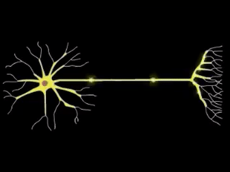

The Human Is An Electrochemical Machine
Showcase.
Redox Reactions.
What are redox reactions, and what do they mean?
Redox reactions are reactions that involve both oxidation, and reduction. Reduction is the process where something must gain electrons to be reduced. Whereas Oxidation is where something must lose electrons in order to become oxidized.
Redox Reactions In Our Body.
Our body is an electrochemical machine and goes through many redox reactions to derive energy
During exersice human bodies need energy, and to get this energy the body is always going through redox reactions. The constant process of these redox reactions occurs in cellular respiration, this process involves the breakdown of glucose and production of ATP for our bodies to use.
The redox reactions during glycolysis:

Oxidation of NAD+
NAD+ gains 2 electrons and 2 H+ ions in order to produce NADH and H+ ions. NAD+ is an oxidizing agent, meaning it can accept electrons

Oxidation Of FAD
FAD gains 2 electrons and 2 H+ ions in order to produce FADH2.

Why need NADH and FADH2
These 2 molecules are used in the Electron Transport Chain (ETC). They can carry many electrons which are then put through many redox reactions. Essentially NADH and FADH2 are carriages that bring over electrons
Electron Transport Chain.
The Electron transport Chain is a collection of proteins within a mitochondrial. The electrons given from NADH and FADH2 pass through the membrane of the mitochondrial, and will go through a series of redox reactions.

Information
The electron transport chain has a total of 4 processes where the electron must go through. However the end result is to produce water, by reducing oxygen. The electrons go through these many redox reactions because the cells need to capture the energy at a slower pace, and the redox reactions help slow down the rate at which energy is being released.
Information
NADH and FADH2 both will deposit their electrons into the electron transport chain at I and II, respectivley. These electrons are high energy, and once they deposit these electrons they turn back into NAD+ and FAD and both will release 2H+ ions. These 2 carriers will go back and do their oxidation processes again to repeat the cycle.
Nerve Signals.
Muscles contract and retract through signals that are produced by our nerves
Neurons
To move our bodies neurons send electrochemical signals to tissues. These tissues receive the signal and perform an action. Ultimatley the result is the contraction, and relaxation of the muscle fiber
Electrochemical Signals

Muscle cells have something called, action potential, which triggers a sequence of actions that result in contraction, and relaxation of the muscle. Once neurons are stimulated they send these signals, and these signals convey information between neurons.
Powered by Jimmy Chavada